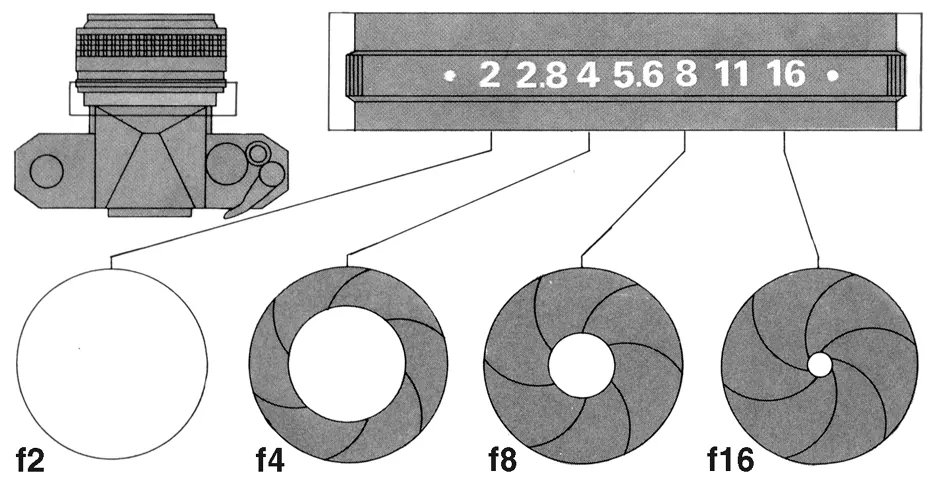
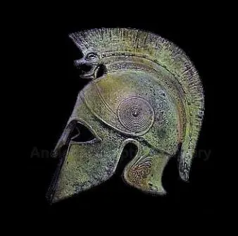
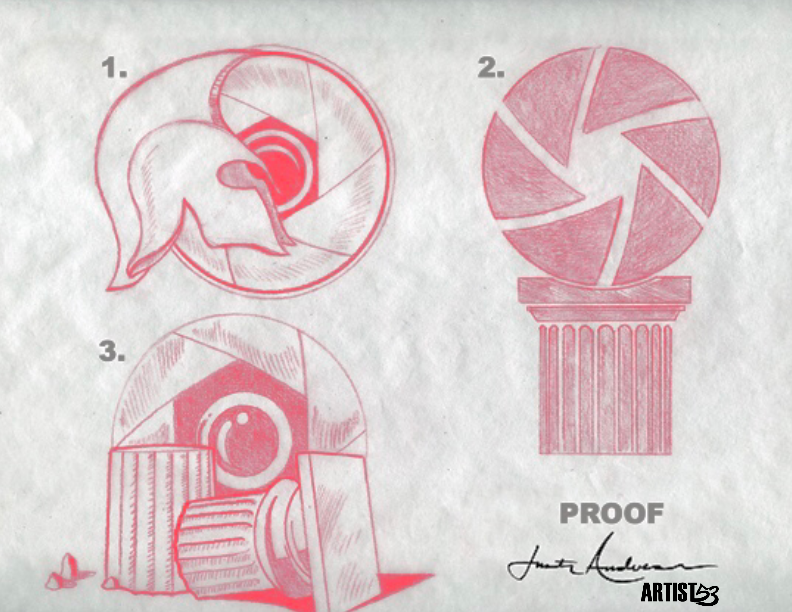
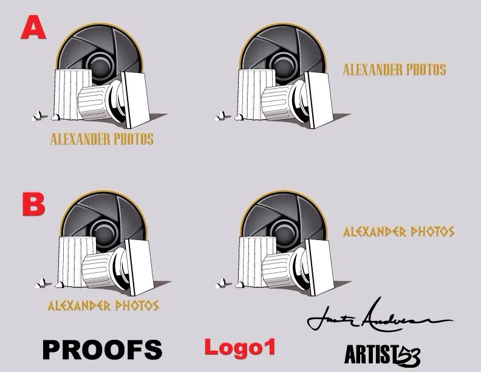
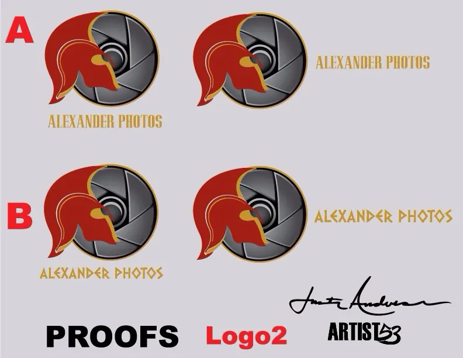
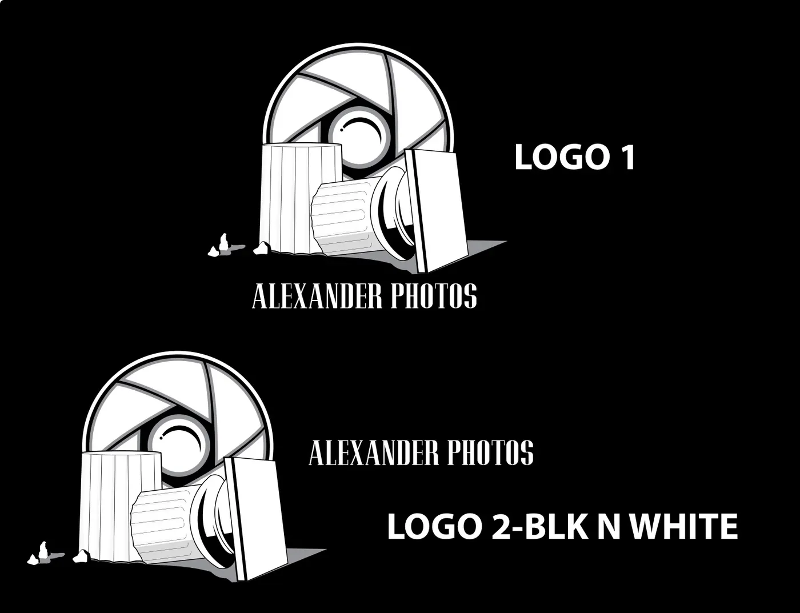
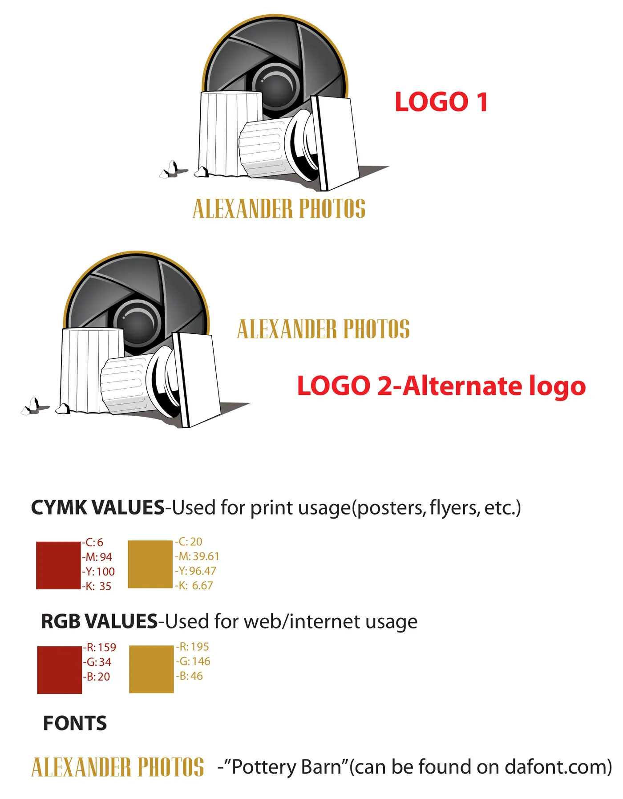
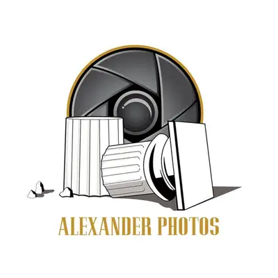

A photography identity built from two central visual ideas—the geometry of a camera aperture and the silhouette of a Greek warrior helmet—then refined through proofing, one color testing and real world brand applications.
Exploring and combining elements to come to a whole.
The client wanted to explore imagery connected to Greek history. From there, I looked at the shape of a Greek warrior helmet as a possible direction. Since the business was photography, I also explored the camera aperture. The challenge became finding a way to combine those two ideas into one complete mark.


02 / Proofs & Early Concepts
Starting On Paper
Exploring The Idea Before The Finish
The hand drawn proofs tested several ways the photography and classical elements could work together. The early directions explored the Greek helmet, the circular camera aperture and architectural forms before one visual language was selected for refinement.
ClientAlexander PhotosIndustryPhotographyServicesLogo Design & Identity SystemDeliverablesPrimary, Alternate & One Color Logos



03 / Refinement
Building A Working Mark
From Concept To Usable Identity
Once the core silhouette was established, the mark was simplified and balanced so the aperture and helmet idea would remain readable at different sizes. Black and white testing made sure the symbol could work even when color was removed.


04 / Brand Application
Business Cards
Putting The Logo To Work
The final logo was carried over to the Alexander Photos business cards, using the red, gold and black palette across the front and back.

05 / Final Logo
The Final Reveal
Alexander Photos
The finished mark brings the original idea together in one image: the circular rhythm of a camera aperture integrated with the strength and profile of a Greek helmet. The result is a photography logo with its own visual story rather than a generic camera symbol.